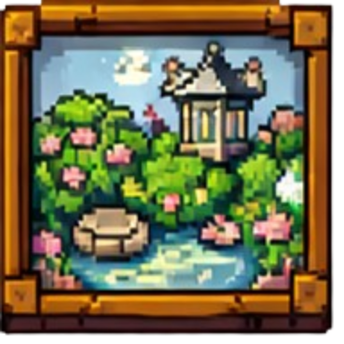
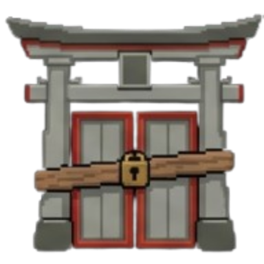

Profile 1 · Number Freak Lv 23
Run of the Nine
Sudoku Roguelike
Resume
Floor 3 · Number Freak
SAVED

Start Game
Game Modes
Meta Progression
Codex
Custom Puzzle
Profiles
Options
Credits

Quit
DAILY WALK
Today's goals
2 of 3
Streak
4 days
· 31 ink stamps
Open
MONTHLY WALK
The Old Tree Grove
Resets in 12 days
Best score
18 420
Open
Version 0.2.0
D-pad chooses · A opens · B back
Main menu · Proposal · The gate (signboard, menu scroll, walks as paper tags)